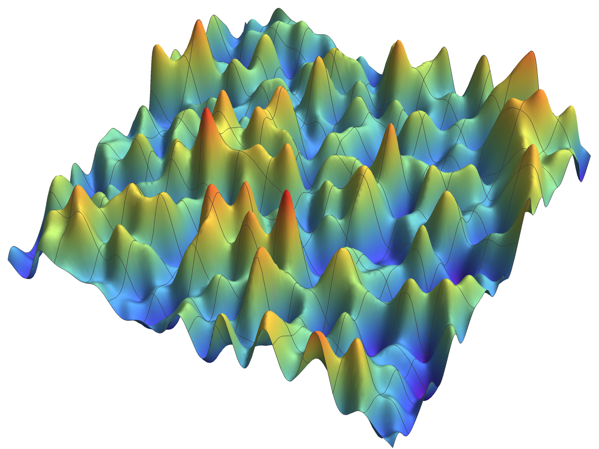

upcoming events
- 17–21/7/23
-
SPP2265 Summer School: Probability and Geometry on Configuration Spaces, Harnack-Haus, Berlin, DE
Organizer with Alexander Zass
some past events
- 27–30/3/23
- SPP 2265 Random Geometric Systems Second Annual Conference, DLR, Cologne, DE
- 20–24/3/23
-
Research visit @ IAM Bonn, Bonn, DE
- 20/2/23
- SMAQ Seminar, Gran Sasso Science Institute, L'Aquila, IT
- 9–12/1/23
-
Research visit @ Sapienza — Univarsità di Roma, Rome, IT
- 27/11–3/12/22
-
Mini-Workshop: A Geometric Fairytale full of Spectral Gaps and Random Fruit @ MFO, Oberwolfach, DE
- 30/10–5/11/22
-
Workshop: Heat Kernels, Stochastic Processes and Functional Inequalities @ MFO, Oberwolfach, DE
- 24–28/10/22
-
Optimal Transportation and Applications @ CRM E. De Giorgi, Pisa, IT
- 7–9/9/22
-
Austrian Stochastic Days 2022 @ Uni Wien, Vienna, AT
- 29/8–3/9/22
-
New Trends in Dirichlet Forms and Optimal Transport & From Dirichlet Forms to Wasserstein Geometry @ HCM, Bonn, DE
- 31/7–6/8/22
-
JTP Stochastic modelling in the life science: From evolution to medicine @ HCM, Bonn, DE
- 24–30/7/22
-
Research visit @ Swansea University, Swansea, UK
- 13–16/6/22
-
Third Italian Meeting on Probability and Mathematical Statistics, Alma Mater Studiorum — University of Bologna, Bologna, IT
Organizer with Federico Sau of the parallel session Scaling limits, criticality, and random media in statistical physics
- 17–22/4/22
- Research visit @ IAM Bonn, Bonn, DE
- 11–14/4/22
- SPP 2265 Random Geometric Systems First Annual Conference, Harnack-Haus, Berlin, DE
- 21/11-18/12/20
- Research in Pairs with Kohei Suzuki, MFO, Oberwolfach, DE
- 28–29/1/20
- Inhomogeneous Random Systems, Institut Curie, Paris, FR
- 17–23/11/19
- MFO workshop Heat Kernels, Stochastic Processes and Functional Inequalities, MFO, Oberwolfach, DE
- 2–6/9/19
- 9th Japanese-German Open Conference on Stochastic Analysis, Fukuoka, JP
- 7–12/7/19
- 5th school on Stochastic and Geometric Analysis, Piz Buin, AT
- 11–13/3/19
- Retreat 2019 of the Collaborative Research Center 1060, Weilburg, DE
- 12–16/11/18
- 9th conference on Optimal Transportation and Applications, SNS, Pisa, IT
- 12–14/3/18
- Retreat 2018 of the Collaborative Research Center 1060, Bad Neuenahr-Ahrweiler, DE
- 4–29/9/17
- Metric Measure Spaces and Ricci Curvature – Intense Activity Period, MPIM, Bonn, DE
- 7–11/11/16
- 8th conference on Optimal Transportation and Applications, SNS, Pisa, IT
- 10–14/10/16
- Stochastic Partial Differential Equations and Related Fields, in honor of Michael Röckner, Bielefeld U, Bielefeld, DE
- 29/8–2/9/16
- Follow-up Workshop to JTP Optimal Transportation, HIM, Bonn, DE
- 4–8/4/16
- 4th school on Stochastic and Geometric Analysis, Vlieland, NE
- 21–23/10/15
- Panorama of Mathematics, HCM, Bonn, DE
standing events
- 9/20–present
- @ IST Austria & Uni Wien & TU Wien, Vienna, AT
Vienna Probability Seminar • (Not so) Informal Probability Seminar • MathPhys Analysis Seminar - 10/15–8/20
- @ IAM Bonn, Bonn, DE
Probability seminar • Stochastic and geometric analysis seminar • CRC 1060 seminar • Hausdorff Kolloquium - 10/13–7/15
- @ Sapienza — Università di Roma, Rome, IT
Analysis seminar
IST Austria (lecturer)
- 04–06/22
-
Fractional Gaussian Fields
C_MAT-209, graduate lecture course
joint with Federico Sau - 11/20–01/21
-
Maths for quantitative life scientists: Probability and Statistical Inference
C_MAT-209, graduate lecture course
IAM Bonn (teaching assistant)
- 04–07/20
-
Mathematik III für Physiker*innen
math241 SoSe 2020 61112, undergraduate lecture course
lecturer: Dr. André Schlichting - 04–07/19
-
Algorithmische Mathematik II
V1G6 SoSe 2019 611100106, undergraduate lecture course
lecturer: Prof. Dr. Patrik Ferrari - 10–12/18
-
Advanced Topics in Stochastic Analysis – Functional inequalities and stochastic analysis on manifolds
V5F3 WiSe 2018/19 611500708, graduate lecture course
lecturer: Prof. Kazumasa Kuwada, PhD - 04–09/18
-
Stochastic Analysis
V4F1 SoSe 2018 611500701, graduate lecture course
lecturer: Prof. Kazumasa Kuwada, PhD - 10/16-3/17
-
Introduction to Stochastic Analysis
V3F2/F4F1 WiSe 2016/17 611100704, graduate lecture course
lecturer: Dr. Matthias Erbar
Welcome to my website. I am a mathematician working at the interface between analysis, probability, and geometry, and a postdoctoral researcher at the Institute of Science and Technology Austria (ISTA) in the group of Jan Maas.
At present, I am principal investigator of the project Configuration Spaces over non-smooth Spaces funded by the Austrian Science Fund (FWF) under the Early-Stage-Programme: Research–Innovation–Training (ESPRIT).
Previously, I obtained my doctoral degree at IAM Bonn, in the group of Karl-Theodor Sturm. I completed my bachelor and master studies in mathematics at Sapienza University in Rome, under the supervision of Adriano Pisante.
At ISTA I have been a member of the Sfb 65 Taming Complexity in Partial Differential Systems and at IAM of the Sfb 1060 The Mathematics of Emergent Effects in project B03 Optimal transport and random measures. I am currently a member of the DFG Priority Programme SPP 2265 in project 15 Random Riemannian Geometry.
My CV can be downloaded here.
preprints
-
A measurable map between measure spaces is shown to have bounded compression if and only if its image via the measure-algebra functor is Lipschitz-continuous w.r.t. the measure-algebra distances. This provides a natural interpretation of maps of bounded compression/deformation by means of the measure-algebra functor and corroborates the assertion that maps of bounded deformation are the natural class of morphisms for the category of complete and separable metric measure spaces.
-
This paper deals with local criteria for the convergence to a global minimiser for gradient flow trajectories and their discretisations. To obtain quantitative estimates on the speed of convergence, we consider variations on the classical Kurdyka—Łojasiewicz inequality for a large class of parameter functions. Our assumptions are given in terms of the initial data, without any reference to an equilibrium point. The main results are convergence statements for gradient flow curves and proximal point sequences to a global minimiser, together with sharp quantitative estimates on the speed of convergence. These convergence results apply in the general setting of lower semicontinuous functionals on complete metric spaces, generalising recent results for smooth functionals on $\mathbb{R}^n$. While the non-smooth setting covers very general spaces, it is also useful for (non)-smooth functionals on $\mathbb{R}^n$.
-
Let $\Upsilon$ be the configuration space over a complete and separable metric base space, endowed with the Poisson measure $\pi$. We study the geometry of $\Upsilon$ from the point of view of optimal transport and Ricci-lower bounds. To do so, we define a formal Riemannian structure on $\mathscr{P}_1(\Upsilon)$, the space of probability measures over $\Upsilon$ with finite first moment, and we construct an extended distance $\mathcal W$ on $\mathscr{P}_1(\Upsilon)$. The distance $\mathcal W$ corresponds, in our setting, to the Benamou—Brenier variational formulation of the Wasserstein distance. Our main technical tool is a non-local continuity equation defined via the difference operator on the Poisson space. We show that the closure of the domain of the relative entropy is a complete geodesic space, when endowed with $\mathcal W$. We establish non-local infinite-dimensional analogues of results regarding the geometry of the Wasserstein space over a metric measure space with synthetic Ricci curvature bounded below. In particular, we obtain that: (a) the Ornstein—Uhlenbeck semi-group is the gradient flow of the relative entropy; (b) the Poisson space has a Ricci curvature, in the entropic sense, bounded below by $1$; (c) the distance $\mathcal W$ satisfies an HWI inequality.
-
For an arbitrary dimension $n$, we study: (a) the Polyharmonic Gaussian Field $h_L$ on the discrete torus $\mathbb{T}^n_L = \frac{1}{L} \mathbb{Z}^{n} / \mathbb{Z}^{n}$, that is the random field whose law on $\mathbb{R}^{\mathbb{T}^{n}_{L}}$ given by \begin{equation*} c_n\, e^{-b_n\|(-\Delta_L)^{n/4}h\|^2} dh, \end{equation*} where $dh$ is the Lebesgue measure and $\Delta_{L}$ is the discrete Laplacian; (b) the associated discrete Liouville Quantum Gravity measure associated with it, that is the random measure on $\mathbb{T}^{n}_{L}$ \begin{equation*} \mu_{L}(dz) = \exp \Big( \gamma h_L(z) - \frac{\gamma^{2}}{2} \mathbf{E} h_{L}(z) \Big) dz, \end{equation*} where $\gamma$ is a regularity parameter. As $L\to\infty$, we prove convergence of the fields $h_L$ to the Polyharmonic Gaussian Field $h$ on the continuous torus $\mathbb{T}^n = \mathbb{R}^{n} / \mathbb{Z}^{n}$, as well as convergence of the random measures $\mu_L$ to the LQG measure $\mu$ on $\mathbb{T}^n$, for all $|\gamma| < \sqrt{2n}$.
-
This is the second paper of a series on configuration spaces $\Upsilon$ over singular spaces $X$. Here, we focus on geometric aspects of the extended metric measure space $(\Upsilon, \mathsf{d}_{\Upsilon}, \mu)$ equipped with the $L^2$-transportation distance $\mathsf{d}_{\Upsilon}$, and a mixed Poisson measure $\mu$. Firstly, we establish the essential self-adjointness and the $L^p$-uniqueness for the Laplacian on $\Upsilon$ lifted from $X$. Secondly, we prove the equivalence of Bakry–Émery curvature bounds on $X$ and on $\Upsilon$, without any metric assumption on $X$. We further prove the Evolution Variation Inequality on $\Upsilon$, and introduce the notion of synthetic Ricci-curvature lower bounds for the extended metric measure space $\Upsilon$. As an application, we prove the Sobolev-to-Lipschitz property on $\Upsilon$ over singular spaces $X$, originally conjectured in the case when $X$ is a manifold by M. Röckner and A. Schield. As a further application, we prove the $L^\infty$-to-$\mathsf{d}_{\Upsilon}$-Lipschitz regularization of the heat semigroup on $\Upsilon$ and gives a new characterization of the ergodicity of the corresponding particle systems in terms of optimal transport.
-
We consider the open symmetric exclusion (SEP) and inclusion (SIP) processes on a bounded Lipschitz domain $\Omega$, with both fast and slow boundary. For the random walks on $\Omega$ dual to SEP/SIP we establish: a functional-CLT-type convergence to the Brownian motion on $\Omega$ with either Neumann (slow boundary), Dirichlet (fast boundary), or Robin (at criticality) boundary conditions; the discrete-to-continuum convergence of the corresponding harmonic profiles. As a consequence, we rigorously derive the hydrodynamic and hydrostatic limits for SEP/SIP on $\Omega$, and analyze their stationary non-equilibrium fluctuations.
-
This paper is the first in a series on configuration spaces over singular spaces. Here, we construct a canonical differential structure on the configuration space $\Upsilon$ over a singular base space $X$ and with a general invariant measure $\mu$ on $\Upsilon$.
We first present an analytic structure on $\Upsilon$, constructing a strongly local Dirichlet form $\mathcal E$ on $L^2(\Upsilon, \mu)$ for $\mu$ in a large class of probability measures. We then investigate the geometric structure of the extended metric measure space $\Upsilon$ endowed with the $L^2$-transportation extended distance $\mathsf{d}_\Upsilon$ and with the measure $\mu$. By establishing various Rademacher- and Sobolev-to-Lipschitz-type properties for $\mathcal E$, we finally provide a complete identification of the analytic and the geometric structure — the canonical differential structure induced on $\Upsilon$ by $X$ and $\mu$ — showing that $\mathcal E$ coincides with the Cheeger energy of $(\Upsilon,\mathsf{d}_\Upsilon,\mu)$ and that the intrinsic distance of $\mathcal E$ coincides with $\mathsf{d}_\Upsilon$.
The class of base spaces to which our results apply includes sub-Riemannian manifolds, $\mathsf{RCD}$ spaces, locally doubling metric measure spaces satisfying a local Poincaré inequality, and path/loop spaces over Riemannian manifolds; as for $\mu$, our results include Campbell measures and quasi-Gibbs measures, in particular: Poisson measures, canonical Gibbs measures, as well as some determinantal/permanental point processes (sine$_\beta$, Airy$_\beta$, Bessel$_{\alpha, \beta}$, Ginibre).
A number of applications to interacting particle systems and infinite-dimensional metric measure geometry are also discussed. In particular, we prove the quasi-regularity of $\mathcal E$ and consequently the existence of a Markov diffusion associated to $\mathcal E$ describing a $\mu$-invariant particle system. We further show the universality of the $L^2$-transportation distance $\mathsf{d}_\Upsilon$ for the Varadhan short-time asymptotics for diffusions on $\Upsilon$, regardless of the choice of $\mu$. Our approach does not rely on any relation between $\mu$ and a possible smooth structure on $X$. In particular, we assume no quasi-invariance property of $\mu$ w.r.t. actions of any group of transformations of $X$. Many of our results are new even in the case of standard Euclidean spaces. -
For large classes of even-dimensional Riemannian manifolds $(M,g)$, we construct and analyze conformally invariant random fields. These centered Gaussian fields $h=h_g$, called co-polyharmonic Gaussian fields, are characterized by their covariance kernels $k$ which exhibit a precise logarithmic divergence: $\big| k(x,y)-\log\frac{1}{d(x,y)} \big| \leq C$. They share the fundamental quasi-invariance property under conformal transformations: if $g'=e^{2\varphi}g$, then $$ h_{g'}\overset{\rm d}= e^{n\varphi} h_g-C\cdot \mathrm{vol}_{g'} $$ with an appropriate random variable $C=C_\varphi$. In terms of the co-polyharmonic Gaussian field $h$, we define the quantum Liouville measure, a random measure on $M$, heuristically given as $$ \mathrm{d}\mu_g^h(x):= e^{\gamma h(x)-\frac{\gamma^2}2k(x,x)}\,\mathrm{dvol}_g(x)\,, $$ and rigorously obtained as almost sure weak limit of the right-hand side with $h$ replaced by suitable regular approximations $h_\ell, \ell\in\mathbb N$. These measures share a crucial quasi-invariance property under conformal transformations: if $g'=e^{2\varphi}g$, then $$ \mathrm{d}\mu^{h'}_{g'}(x)\overset{\rm (d)} = e^{F^h(x)}\,\mathrm{d}\mu_g^h(x) $$ for an explicitly given random variable $F^h(x)$. In terms on the quantum Liouville measure, we define the Liouville Brownian motion on $M$ and the random GJMS operators. Finally, we present an approach to a conformal field theory in arbitrary even dimensions with an ansatz based on Branson's $Q$-curvature: we give a rigorous meaning to the Polyakov—Liouville measure $$ \mathrm{d}\boldsymbol{\nu}^*_g(h) =\frac{1}{Z^*_g} \exp\left(- \int \Theta\,Q_g h + m\, e^{\gamma h} \mathrm{dvol}_g\right) \exp\left(-\frac{a_n}{2} {\mathfrak p}_g(h,h)\right) \mathrm{d}h $$ for suitable positive constants $\Theta$, $m$, $\gamma$ and $a_n$, and we derive the corresponding conformal anomaly. The set of admissible manifolds is conformally invariant. It includes all compact $2$-dimensional Riemannian manifolds, all compact non-negatively curved Einstein manifolds of even dimension, and large classes of compact hyperbolic manifolds of even dimension. However, not every compact even-dimensional Riemannian manifold is admissible. Our results concerning the logarithmic divergence of the kernel $k$ — defined as the Green kernel for the GJMS operator on $(M,g)$ — rely on new sharp estimates for heat kernels and higher order Green kernels on arbitrary compact manifolds.
-
We study random perturbations of Riemannian manifolds $(\mathsf{𝖬},\mathsf{𝗀})$ by means of so-called Fractional Gaussian Fields, which are defined intrinsically by the given manifold. The fields $h^\bullet\colon \omega\mapsto h^\omega$ will act on the manifolds via conformal transformation $\mathsf{g}\mapsto \mathsf{g}^\omega\colon\!= e^{2h^\omega}\mathsf{g}$. Our focus will be on the regular case with Hurst parameter $H>0$, the celebrated Liouville geometry in two dimensions being borderline. We want to understand how basic geometric and functional analytic quantities like diameter, volume, heat kernel, Brownian motion, spectral bound, or spectral gap will change under the influence of the noise. And if so, is it possible to quantify these dependencies in terms of key parameters of the noise. Another goal is to define and analyze in detail the Fractional Gaussian Fields on a general Riemannian manifold, a fascinating object of independent interest.
publications
-
-
journal |
We study ergodic decompositions of Dirichlet spaces under intertwining via unitary order isomorphisms. We show that the ergodic decomposition of a quasi-regular Dirichlet space is unique up to a unique isomorphism of the indexing space. Furthermore, every unitary order isomorphism intertwining two quasi-regular Dirichlet spaces is decomposable over their ergodic decompositions up to conjugation via an isomorphism of the corresponding indexing spaces.
-
journal |
Using elementary hyperbolic geometry, we give an explicit formula for the contraction constant of the skinning map over moduli spaces of relatively acylindrical hyperbolic manifolds.
-
journal |
We construct a recurrent diffusion process with values in the space of probability measures over an arbitrary closed Riemannian manifold of dimension $d\geq 2$. The process is associated with the Dirichlet form defined by integration of the Wasserstein gradient w.r.t. the Dirichlet-Ferguson measure, and is the counterpart on multi-dimensional base spaces to the Modified Massive Arratia Flow over the unit interval described in V. Konarovskyi, M.-K. von Renesse, Comm. Pure Appl. Math., 72, 0764-0800 (2019). Together with two different constructions of the process, we discuss its ergodicity, invariant sets, finite-dimensional approximations, and Varadhan short-time asymptotics.
-
journal |
We prove the Sobolev-to-Lipschitz property for metric measure spaces satisfying the quasi curvature dimension condition recently introduced in E. Milman, The Quasi Curvature-Dimension Condition with applications to sub-Riemannian manifolds, Comm. Pure Appl. Math. (to appear). We provide several applications to properties of the corresponding heat semigroup. In particular, under the additional assumption of infinitesimal Hilbertianity, we show the Varadhan short-time asymptotics for the heat semigroup with respect to the distance, and prove the irreducibility of the heat semigroup. These result apply in particular to large classes of (ideal) sub-Riemannian manifolds.
-
journal |
We extensively discuss the Rademacher and Sobolev-to-Lipschitz properties for generalized intrinsic distances on strongly local Dirichlet spaces possibly without square field operator. We present many non-smooth and infinite-dimensional examples. As an application, we prove the integral Varadhan short-time asymptotic with respect to a given distance function for a large class of strongly local Dirichlet forms.
-
journal |
We study superpositions and direct integrals of quadratic and Dirichlet forms. We show that each quasi-regular Dirichlet space over a probability space admits a unique representation as a direct integral of irreducible Dirichlet spaces, quasi-regular for the same underlying topology. The same holds for each quasi-regular strongly local Dirichlet space over a metrizable Luzin, Radon measure space, and admitting carré du champ operator. In this case, the representation is only projectively unique.
-
journal |
Let $\mathbb P$ be any Borel probability measure on the $L^2$-Wasserstein space $(\mathscr{P}_2(M), W_2)$ over a closed Riemannian manifold $M$. We consider the Dirichlet form $\mathcal E$ induced by $\mathbb P$ and by the Wasserstein gradient on $\mathscr{P}_2(M)$. Under natural assumptions on $\mathbb P$, we show that $W_2$-Lipschitz functions on $\mathscr{P}_2(M)$ are contained in the Dirichlet space $\mathscr{D}(\mathcal E)$ and that $W_2$ is dominated by the intrinsic metric induced by $\mathcal E$. We illustrate our results by giving several detailed examples.
-
journal |
We compute the characteristic functional of the Dirichlet–Ferguson measure over a locally compact Polish space and prove continuous dependence of the random measure on the parameter measure. In finite dimension, we identify the dynamical symmetry algebra of the characteristic functional of the Dirichlet distribution with a simple Lie algebra of type $A$. We study the lattice determined by characteristic functionals of categorical Dirichlet posteriors, showing that it has a natural structure of weight Lie algebra module and providing a probabilistic interpretation. A partial generalization to the case of the Dirichlet–Ferguson measure is also obtained.
-
journal |
Statistical mechanics provides an effective framework to investigate information processing in biochemical reactions. Within such framework far-reaching analogies are established among (anti-) cooperative collective behaviors in chemical kinetics, (anti-)ferromagnetic spin models in statistical mechanics and operational amplifiers/flip-flops in cybernetics. The underlying modeling – based on spin systems – has been proved to be accurate for a wide class of systems matching classical (e.g. Michaelis–Menten, Hill, Adair) scenarios in the infinite-size approximation. However, the current research in biochemical information processing has been focusing on systems involving a relatively small number of units, where this approximation is no longer valid. Here we show that the whole statistical mechanical description of reaction kinetics can be re-formulated via a mechanical analogy – based on completely integrable hydrodynamic-type systems of PDEs – which provides explicit finite-size solutions, matching recently investigated phenomena (e.g. noise-induced cooperativity, stochastic bi-stability, quorum sensing). The resulting picture, successfully tested against a broad spectrum of data, constitutes a neat rationale for a numerically effective and theoretically consistent description of collective behaviors in biochemical reactions.
-
journal |
Given a non-linear Dirichlet problem, we prove a result of continuous dependence, for both the solution and its gradient, on the zero order term in the case of low Marcinkiewicz summability for the latter, relying on the existence results and estimates recently proved in Boccardo (Ann. Mat. Pura Appl. 188(4):591–601, 2009). As a consequence, solutions obtained as limit of approximations are proved to be unique even in the infinite energy case.
-
journal |
Recent experimental breakthroughs have finally allowed to implement in-vitro reaction kinetics (the so called enzyme based logic) which code for two-inputs logic gates and mimic the stochastic AND (and NAND) as well as the stochastic OR (and NOR). This accomplishment, together with the already-known single-input gates (performing as YES and NOT), provides a logic base and paves the way to the development of powerful biotechnological devices. However, as biochemical systems are always affected by the presence of noise (e.g. thermal), standard logic is not the correct theoretical reference framework, rather we show that statistical mechanics can work for this scope: here we formulate a complete statistical mechanical description of the Monod–Wyman–Changeaux allosteric model for both single and double ligand systems, with the purpose of exploring their practical capabilities to express noisy logical operators and/or perform stochastic logical operations. Mixing statistical mechanics with logics and testing quantitatively the resulting findings on the available biochemical data, we successfully revise the concept of cooperativity (and anti-cooperativity) for allosteric systems, with particular emphasis on its computational capabilities, the related ranges and scaling of the involved parameters and its differences with classical cooperativity (and anti-cooperativity).
phd thesis
We construct a canonical diffusion process on the space of probability measures over a closed Riemannian manifold, with invariant measure the Dirichlet–Ferguson measure. Together with a brief survey of the relevant literature, we collect several tools from the theory of point processes and of optimal transportation. Firstly, we study the characteristic functional of Dirichlet–Ferguson measures with non-negative finite intensity measure over locally compact Polish spaces. We compute such characteristic functional as a martingale limit of confluent Lauricella hypergeometric functions of type $D$ with diverging arity. Secondly, we study the interplay between the self-conjugate prior property of Dirichlet distributions in Bayesian non-parametrics, the dynamical symmetry algebra of said Lauricella functions and Pólya Enumeration Theory. Further, we provide a new proof of J. Sethuraman’s fixed point characterization of Dirichlet–Ferguson measures, and an understanding of the latter as an integral identity of Mecke- or Georgii–Nguyen–Zessin-type. Thirdly, we prove a Rademacher-type result on the Wasserstein space over a closed Riemannian manifold. Namely, sufficient conditions are given for a probability measure $\mathbb{P}$ on the Wasserstein space, so that real-valued Lipschitz functions be $\mathbb{P}$-a.e. differentiable in a suitable sense. Some examples of measures satisfying such conditions are also provided. Finally, we give two constructions of a Markov diffusion process with values in the said Wasserstein space. The process is associated with the Dirichlet integral induced by the Wasserstein gradient and by the Dirichlet–Ferguson measure with intensity the Riemannian volume measure of the base manifold. We study the properties of the process, including its invariant sets, short-time asymptotics for the heat kernel, and a description by means of a stochastic partial differential equation.
My current research focus is on the Dirichlet-forms approach to Markov diffusions on non-flat infinite-dimensional spaces, in particular Wasserstein and configuration spaces.
Random Riemannian Geometry

truncated Fourier-series expansion of
the LQG measure on 2D unit torus
Together with Ronan Herry, and PIs Eva Kopfer, and Karl-Theodor Sturm, I am a member of Projekt 15 Random Riemannian Geometry within the DFG Priority Programme SPP 2265. We are studying Liouville Quantum Gravity on closed Riemannian manifolds $(M,g)$ of even dimension $n\geq 2$. In order to obtain a conformal field theory, we replace the standard Laplace–Beltrami operator with its conformally covariant counterpart, the Graham–Jenne–Mason–Sparling operator of critical order $n/2$.
Analysis and Geometry on Spaces of Measures
I am broadly interested in the interplay among analysis, stochastic analysis, and (metric measure) geometry on spaces of measures, and in particular spaces of probability measures and spaces of configurations.
a $\mathcal{D}$-typical measure on the square
Probabilities measures. My PhD thesis contains two constructions of the Dirichlet–Ferguson diffusion on the $L^2$-Wasserstein space $\mathscr{P}_2(M)$ over any closed Riemannian manifold $(M,g)$ of dimension $d\geq 2$. This process can be regarded as the canonical diffusion process induced by the geometry of $\mathscr{P}_2$ and by the Dirichlet–Ferguson measure $\mathcal{D}_{m_g}$ with intensity measure the Riemannian volume $m_g$. It is the multi-dimensional analog of Konarovskyi's Modified Massive Arratia Flow, but no coalescence occurs, by reason of the dimension of $M$. The construction required a thorough study of the Dirichlet–Ferguson measure, and a Rademacher-type theorem for general measures on $\mathscr{P}_2(M)$.
Configurations. Together with Kohei Suzuki, we are developing a comprehensive analytical and geometric framework for the study of diffusions on the configuration space $\Upsilon$ over a metric measure space $(X,d,m)$. Typically, $\Upsilon$ will be endowed with a quasi-Gibbs probability reference measure $\mu$ and with the $L^2$-transportation distance $d_\Upsilon$ induced by $d$. As a first cornerstone in the theory, we show that ― under quite general assumptions on $X$ and $\mu$ ― the metric measure structure of $(\Upsilon,d_\Upsilon,\mu)$ coincides with the Dirichlet space structure on $\Upsilon$ inherited from $X$.
ESPRIT Project 208. I am principal investigator of the project Configuration Spaces over non-smooth Spaces funded by the Austrian Science Fund (FWF) under the Esprit Programme, with Jan Maas as my mentor.
- Duration: July 1, 2022 – June 30, 2025
- ESP 208 ESPRIT-Programm
- Total Funding: € 294.015,98
Non-smooth Spaces and Dirichlet Spaces
Part of my research is focused on abstract Dirichlet spaces, approached in full generality. The main contributions are: the construction of ergodic decompositions for general quasi-regular strongly local Dirichlet spaces; a study behavior of these decompositions under the action of order isomorphisms (with Melchior Wirth); a study of the metric properties of intrinsic distances, and in particular of the Rademacher and Sobolev-to-Lipschitz properties, and of Varadhan integral-type short-time asymptotics for the heat semigroup (with K. Suzuki).
Biological Cybernetics
During my master studies, my main interests lay in optimal transport and second-order elliptic PDEs in divergence form. Also, I was a member of Adriano Barra's research group on biological cybernetics.
popularization of science
-
journal |
$0$ zero, ovvero la quantità del nulla. Un'idea che — assieme a quella gemella di insieme vuoto — ha segnato la storia della matematica attraverso i secoli e i continenti, ben al di là dell'introduzione dei sistemi numerici posizionali o degli interi relativi.
$\emptyset$ vuoto, ovvero l'insieme privo di elementi ed unico sottoinsieme di sé, ogni elemento del quale soddisfa ogni proprietà: adynaton per la filosofia antica, paradosso per quella moderna, commodité irrinunciabile per la matematica contemporanea. Dell'uso di questi due concetti, intimamente legati, cercheremo di fornire una storia breve, corredata dalle fonti originali dall'antichità ai giorni nostri ed arricchita da curiosità matematiche, accennando poi a come alcune tappe storiche segnino delicati passaggi cognitivi nel loro apprendimento. -
book |
The composition of scientific and humanistic ambits of experience rises on one hand from a concrete necessity of our culture as in didactical purposes; but if we look at the problem by a more abstract point of view it is possible to follow the same principles that lead Gödel and Wittgenstein to define the limits of mathematical and verbal language in order to highlight the complementarity of their expressive potentialities.
Wolfram Demonstration Project
Every Demonstration undergoes a rigorous review process that checks for quality, clarity and accuracy with standards similar to those of traditional academic publications.
from the WDP FAQs
-
This Demonstration shows the evolution of a partially asymmetric simple exclusion process (PASEP) on the integer lattice $\mathbb{Z}.$ In PASEP, a particle waits an exponential amount of time, then moves to the right with probability $p$ or to the left with probability $1-p$, unless the site is occupied. In the case $p=1$, the dynamic is totally asymmetric, and the process is known as a totally asymmetric simple exclusion process (TASEP).
-
This demonstration helps visualizing Runge's phenomenon in spline intepolation.
-
Given $X=\{a_1,\dotsc, a_r\}$ a set of generators for $\mathbb{R}^n$, the zonotope $\mathcal{Z}(X)$ generated by $X$ is the convex hull of all vectors of the form $\sum_{a\in X} a$; that is, $\mathcal{Z}(X)$ is the Minkowski sum of all segments $[0,a]$, where $a\in X$. Also, $\mathcal{Z}(X)$ is the shadow of the $r$-dimensional cube $[0,1]^r$ via the projection $(t_1,\dotsc, t_r)\mapsto \sum_i^r t_i a_i$.
© 2021 — 2023 Copyright: Lorenzo Dello Schiavo